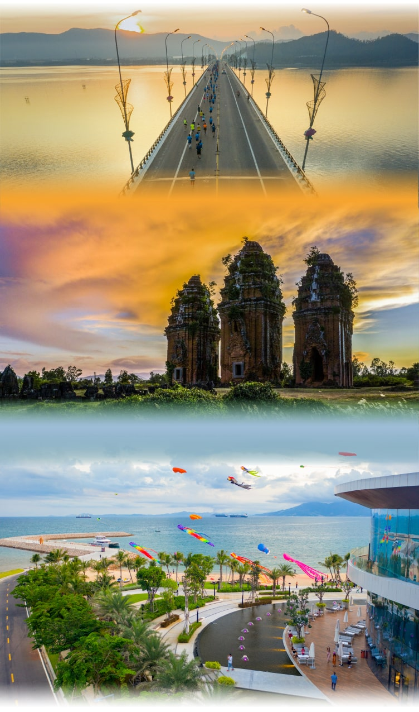
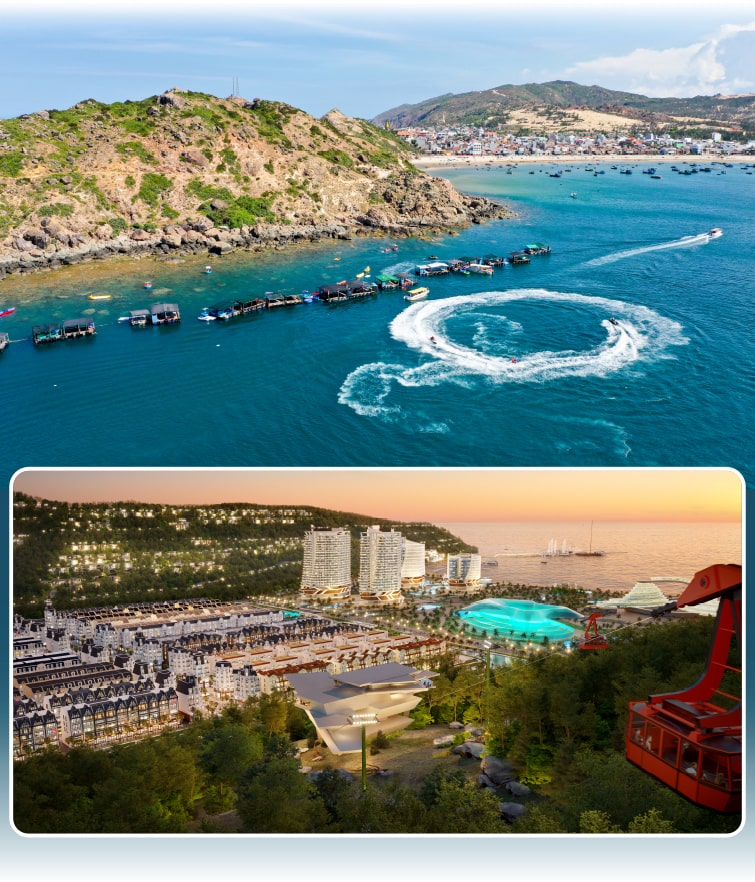
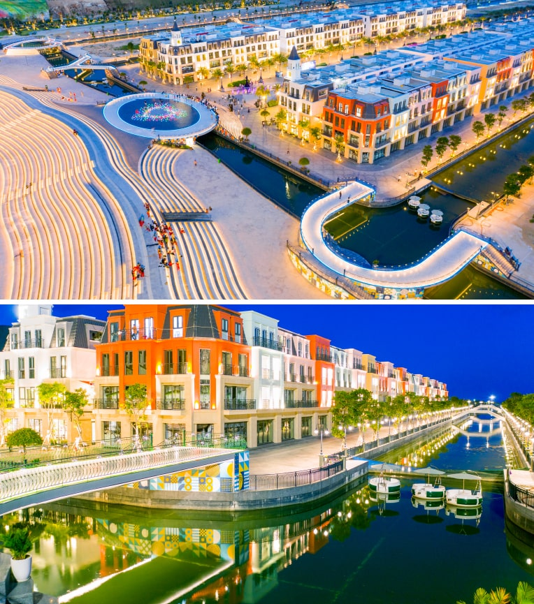
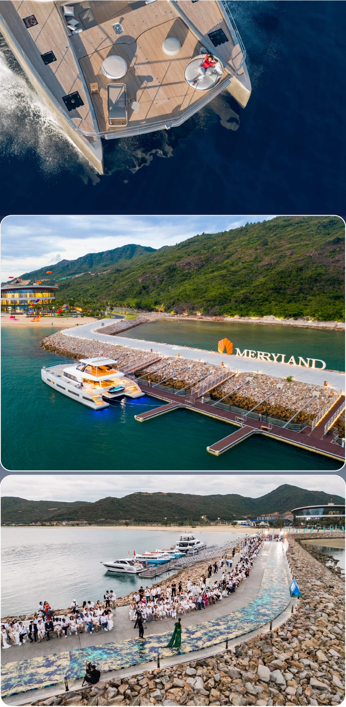
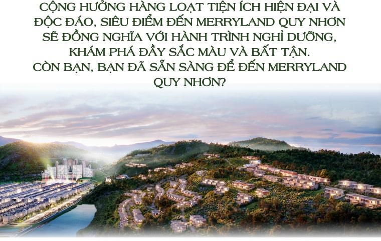

Không có gì bất ngờ khi một trong số điểm đến sáng nhất trên bản đồ du lịch suốt mùa hè này thuộc về Quy Nhơn – Bình Định. Lượt du khách đến miền “đất võ trời văn” trong 6 tháng đầu năm 2022 đạt gần 2,3 triệu lượt, vượt qua những cái tên hàng đầu cả nước như Khánh Hòa, Đà Nẵng. Cộng đồng du lịch “phát cuồng” với bán đảo Hải Giang, làng chài ven biển đẹp tựa phim Hàn ở Nhơn Lý, bãi biển trong veo nhìn thấy cả đáy ở Kỳ Co, cùng đảo Cù Lao Xanh đầy bí ẩn được mệnh danh là “Hòn ngọc viễn Đông”…
Từng lọt top 20 điểm đến đáng mong chờ nhất thế giới năm 2020, thành phố biển trong tâm trí tín đồ du lịch là điểm đến “must go” – “phải đi”. Đặc biệt, bên cạnh vẻ đẹp thiên đường do thiên nhiên ban tặng, nơi đây còn khiến du khách háo hức trước sự hiện diện của một siêu đểm đến – “Kỳ quan miền nhiệt đới” MerryLand Quy Nhơn.
Bán đảo Hải Giang – vùng đất MerryLand Quy Nhơn hiện diện – mang diện mạo tuyệt tác. Ngay khi đặt chân tới nơi này, Paul C. Steelman - Nhà sáng lập kiêm CEO công ty thiết kế nổi tiếng thế giới Steelman Partners LLP thấy mình như đang đứng trước một cô gái xinh đẹp, tự nhiên và hoàn mỹ đến nỗi chẳng cần phải tô vẽ, trang điểm gì thêm.
Shannon Brooks – CEO của Laservision, đơn vị với những màn trình diễn nước, ánh sáng tuyệt đỉnh nhất thế giới lại thừa nhận địa thế độc đáo với biển, thung lũng và núi đồi tạo nên vẻ đẹp cùng bối cảnh tuyệt vời cho những show diễn ngoạn mục.
Cũng giống như 2 cái tên danh tiếng trên, khi tận mắt nhìn, bất kỳ ai đều sẽ cảm thán trước vẻ đẹp của nơi này. Hải Giang có địa thế “hai vai tựa núi, hai mặt hướng biển” cùng bãi biển hướng Nam nối liền thung lũng thoai thoải. Nơi đây sẽ mang lại đầy ắp trải nghiệm không thể quên cho du khách Việt Nam và quốc tế.
Giữa vùng trời biển, thung lũng và núi đồi hội tụ, MerryLand Quy Nhơn được Tập đoàn Hưng Thịnh khởi dựng trong tầm nhìn một điểm đến quốc tế hàng đầu khu vực. Thành phố bán đảo được quy hoạch, thiết kế và quản lý vận hành với sự đồng hành của những tên tuổi lừng danh thế giới. Trong danh sách các đối tác quốc tế là những tên tuổi hàng đầu như Laservision, Marriott International, Samsung Everland, Greg Norman, Steelman Partners... Tất cả kiến tạo nên một siêu điểm đến với những trải nghiệm xứng tầm kỳ quan ngay bên bờ biển miền Trung.

Đặt chân tới MerryLand Quy Nhơn, một dải sông nước giữa núi đồi, kề cận biển lập tức hấp dẫn du khách. 5 dòng kênh dài tới 3500m uốn lượn giữa thung lũng, bao quanh 12 tuyến phố của phân khu Bizhouse Canal District, tạo nên khung cảnh hữu tình đến lạ kỳ.
Thả bộ hoặc xuôi thuyền dọc theo dòng chảy của những dòng kênh, bạn sẽ dễ dàng liên tưởng đến sự trù phú và phồn thịnh của New York bên dòng sông Hudson, vẻ lãng mạn và mơ mộng của Paris bên dòng sông Seine, hay cái nhộn nhịp và tấp nập của Seoul bên dòng sông Hàn.
Bắc qua những dòng kênh là 33 cây cầu vọng cảnh được thiết kế hoàn toàn riêng biệt - điểm check-in không thể bỏ qua với bất kỳ ai.
Đứng đây, du khách được thỏa sức check-in, chiêm ngưỡng dãy phố thương mại náo nhiệt, ngắm nhìn khu nhà với kiến trúc đa dạng, giao thoa giữa phương Đông và phương Tây.
Hoàng hôn buông xuống cũng là lúc du khách ngồi thảnh thơi tại quảng trường nhạc nước thuộc phân khu Bizhouse Canal District.
Với quy mô lớn và thiết kế vô cùng đặc biệt, nơi đây đã xác lập 2 kỷ lục: "Quảng trường nhạc nước có tổng diện tích lớn nhất Việt Nam được xây dựng trong Tổ hợp Du lịch - Thương mại - Giải trí" (44.283 m2) và “Quảng trường nhạc nước dài nhất Việt Nam" với tổng chiều dài toàn khu lên tới hơn 840m.
Giữa khung cảnh hùng vĩ của biển trời, cả bán đảo Hải Giang như hội tụ ánh sáng trong những màn trình diễn nhạc nước Hologram, 3D Mapping công phu và độc đáo, được thực hiện bởi Laservision - “nhà sáng tạo những show diễn lớn nhất thế giới”.
Laservision đã triển khai nhiều công nghệ trải rộng trên diện tích hàng nghìn mét vuông để tạo ra những hiệu ứng tuyệt đẹp nhằm chạm đến cảm xúc và tạo ra khoảnh khắc đáng nhớ cho khán giả. Nơi đây được lắp đặt hơn 300 vòi phun nước với độ cao từ 30-50 m. Xen kẽ là các vòi phun lửa khổng lồ với độ cao lên tới 20 m. Tất cả được vận hành bởi công nghệ hiện đại nhất và tái hiện ngoạn mục những câu chuyện về tình yêu, vùng đất và con người...
MerryLand Quy Nhơn không chỉ có những câu cầu vọng cảnh riêng mình bắc ngang dòng kênh. Nối liền quảng trường nhạc nước là tổ hợp cầu Y.O.U và cầu trái tim - tọa độ lãng mạn mà ai cũng muốn đặt chân đến ít nhất một lần trong đời.
Theo họa sĩ Thu Thủy – tác giả của tổ hợp cầu, mỗi cây cầu đều mang một câu chuyện về tình yêu với ý nghĩa rộng lớn, được tái hiện trong dáng hình đặc biệt sau nhiều tháng miệt mài tạo tác. Trung tâm của tổ hợp là cầu chữ O, như một biểu tượng vẹn tròn hạnh phúc. Bề mặt cầu chữ O được tạo thành từ hàng trăm ngàn viên gạch men, gốm nung thủ công. Hình trái tim chính giữa chữ O như đang tỏa sáng lấp lánh.
Vẫn là câu chuyện tình yêu đối lứa - đất nước - con người, cầu trái tim vừa chính thức ra mắt công chúng tại MerryLand Quy Nhơn như nở rộ hàng ngàn đóa hồng đỏ thắm đan cài vào nhau đầy lôi cuốn trên bề mặt.
Khi đêm về, cầu trái tim với đa dạng dáng hình hoa hồng đỏ càng trở nên rực rỡ, bừng sáng nhờ hệ thống đèn được lắp đặt tỉ mỉ. Một tổ hợp cầu Y.O.U với hai cầu trái tim như một biểu tượng tình yêu bền chặt đã thật sự “lấy lòng” du khách tới MerryLand Quy Nhơn.

Vươn mình ra biển, bến du thuyền tại MerryLand Quy Nhơn uốn lượn mền mại, sẵn sàng đón thượng khách cập bến và trải nghiệm những hải trình đặc quyền.
Cùng với những hải trình được thiết kế riêng, trải nghiệm của du khách thượng lưu trên những siêu du thuyền sẽ được làm đầy và sẵn sàng 24/7 với chuẩn mực phục vụ đẳng cấp nhất. Các thượng khách có thể nhâm nhi ly rượu lâu năm, thưởng thức âm nhạc được hòa tấu bởi các nghệ sĩ tài hoa, thư thái ngắm biển và hòa mình trong hàng loạt hoạt động giải trí sôi động như: khiêu vũ, sân khấu biểu diễn hay đại tiệc độc đáo...
Trải nghiệm thượng lưu được nối dài với sân golf 18 lỗ ven biển đẳng cấp thế giới MerryLand Golf Club do Greg Norman thiết kế. MerryLand Golf Club được xây dựng chuẩn Championship với chiều dài hơn 7.200 yards, 18 lỗ và nhiều lựa chọn điểm phát bóng. Sân golf 72 par này cũng mang đến một tầm nhìn tuyệt đẹp về vịnh Mai Hương khi nằm trên một sườn đồi thoai thoải ra biển.
Với thiết kế hố đa dạng, địa hình độc đáo để cô lập các tees, những bẫy rập độc đáo xuyên qua các fairway uốn lượn và những green được cắt tỉa cẩn thận, MerryLand Golf Club sẽ mang đến những trải nghiệm chơi golf thú vị với những thử thách đáng nhớ, vốn là điểm nổi bật trong các thiết kế của Greg Norman.
MerryLand Quy Nhơn vừa ghi nhận con số kỷ lục thu hút 15.000 khán giả tham dự đêm chung kết Miss World Vietnam 2022. Trước đó, trong gần 30 ngày liên tiếp, “thành phố bán đảo” đã diễn ra hàng loạt hoạt động hấp dẫn như: Người đẹp Thể thao, trở thành địa điểm ngoạn mục của show thời trang Vietnam Beauty Fashion Fest và đại nhạc hội Người đẹp biển sôi động với sự tham gia của gần 7000 lượt khách. Đây cũng là nơi diễn ra sự kiện chạy bộ dành cho gia đình thu hút hơn 3.000 người tham dự vào dịp 30/4 vừa qua.
Loạt sự kiện sôi động thu hút hàng chục ngàn người tham dự cho thấy MerryLand Quy Nhơn đang trở thành điểm hẹn của các siêu sự kiện quy mô quốc gia và quốc tế. Đây cũng là động lực lớn làm thay đổi vị thế thành phố biển trên bản đồ du lịch châu Á.
Trong tương lai, MerryLand Quy Nhơn cung cấp hàng loạt tiện ích khác như Water Park - công viên nước dành cho gia đình và trẻ nhỏ, Botanic Garden - khu vườn với đài quan sát thiên nhiên, Adventure Park - công viên chủ đề với nhiều trò chơi mạo hiểm hấp dẫn…

Cùng với chiến lược xây dựng điểm đến vui chơi giải trí - trải nghiệm theo xu hướng du lịch thế giới, chủ đầu tư MerryLand Quy Nhơn cá nhân hóa và thỏa mãn từng nhu cầu lưu trú của du khách toàn cầu, bao gồm đa dạng phân khúc từ cao cấp tới siêu cao cấp.
Đặc biệt, sẵn sàng ra mắt công chúng là phân khu Hollywood Hills, với bộ sưu tập biệt thự nghệ thuật hàng hiệu mang thương hiệu YOO Inspired by Starck hàng đầu thế giới, do huyền thoại Philippe Starck đích thân đảm nhận vai trò Giám đốc sáng tạo. Trên cao độ từ 40-100m so với mực nước biển, bộ sưu tập biệt thự nghệ thuật hàng hiệu tại Hollywood Hills mở tầm nhìn đa sắc: Phía Nam là màu xanh ngọc lam tuyệt đẹp của vịnh biển hòa quyện hoàn hảo với đường chân trời, phía Bắc là màu xanh lục bảo của sân golf trải dài, phía Tây là màu đa sắc ấn tượng của quần thể kiến trúc bizhouse với điểm nhấn là tòa tháp biểu tượng tỏa sáng ngoạn mục, và phía Đông là màu ánh bạc thanh bình của làng chài Nhơn Hải.
Nhiều các khu nghỉ dưỡng khác đang được xây dựng dưới sự vận hành quản lý của các đối tác quốc tế như: Marriott…đang được gấp rút thực hiện. Các căn hộ nghỉ dưỡng với tầm nhìn rộng mở chân trời cũng đang được triển khai nhằm cung cấp cho thị trường Quy Nhơn số lượng lớn các cơ sở lưu trú đạt chuẩn quốc tế, bù lấp vào sự thiếu hụt hạ tầng khách sạn của điểm đến tiềm năng này.
